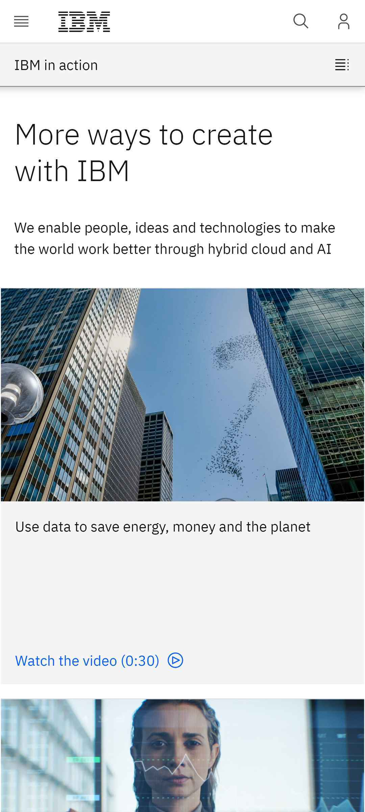
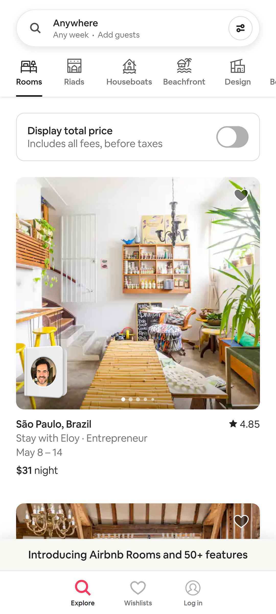

PARC Contrast
IBM
www.ibm.com The image showcases the effective utilization of contrast ratio in web design, highlighting the ability to optimize the display of a device by accentuating the disparity between the highest and lowest levels of brightness. This attention to contrast ratio ensures that the details on the webpage are presented with clarity and precision, allowing for a visually engaging experience that maximizes the visual impact and legibility of the content.
Rule of Thirds
Airbnb
www.airbnb.com The image illustrates the concept of employing the rule of thirds in web design, where elements on the page are arranged to occupy one-third of the overall space. This intentional composition creates a visually appealing layout that is aesthetically pleasing to viewers.
PARC Alignment
Mangageko
www.mangageko.comThe image exemplifies the importance of alignment in web design, as it demonstrates how the contents of the webpage are thoughtfully arranged in a well-structured and visually pleasing manner. The elements are aligned in a sequential and hierarchical order, ensuring that each component is appropriately positioned and visually connected to create a cohesive and organized layout.